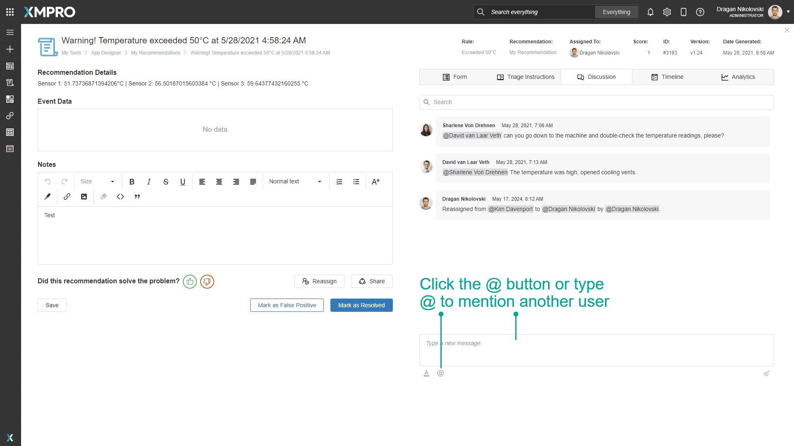

Recommendation Alert
Recommendation Alerts are advanced alerts that are triggered when real-time data meets the criteria defined in a Recommendation Rule. They notify you when certain conditions occur in your data and provide decision support for how to take action.
The Recommendation Alerts are found by clicking on the Recommendations button in the menu on the left of the App Designer.
The grid provides an overview of all the Alerts that you have access to. The rightmost Status column shows whether the Alert is Pending or Resolved.
You can order, filter by specific values, search the alerts by any of the columns, and search in all columns in the Search bar.
To see Resolved as well as Pending Alerts, check the "Show Archived" checkbox.
Click on an Alert in the grid to navigate to the Recommendation Alert details.
Finding Recommendation Alerts
The search bar can be used to find any specific Recommendation Alerts that you may be looking for. There is a dropdown option where you can specify to search through everything in App Designer, or only for Recommendation Alerts.

Detailed View
The Recommendation Alert page provides details of the alert. It allows you to input information into the Form, view Triage Instructions, have a Discussion with your team, and see the alert Timeline and Analytics.

Headline
The headline of the Alert. Generated by the Rule Headline.
Recommendation Details
A paragraph on the details of the Alert. Generated by the Rule Description.
Event Data
The data received by the Data Stream. If "Log Data On All Occurrences" is checked in the Rule, this data will be updated as new data is received.
Notes
An area to write notes and observations.
Actions
This area contains the actions that can be performed on a Recommendation Alert.
Assign and Reassign
Reassign added in v4.4.4
Ability to Assign (or Reassign) responsibility for the Recommendation Alert to a user that has run access to the Recommendation. The default selection is the logged-in user.
When this action is performed, the action is recorded on the Timeline and in the Discussion - thus notifying the assignee.

Share
Ability to share the Recommendation Alert to users that have run access to the Recommendation. Selected users will receive an email with the note and a link to the Recommendation Alert.
Save
Saves the changes made on the Recommendation Alert.
Mark as False Positive
Someone reviewed the issue, determined that the asset doesn't have an issue or it was triggered while in Maintenance/Service mode, and considered the matter closed.
Mark as Resolved
Someone reviewed the issue, took mitigation steps, and considered the matter resolved.
Form
A form where relevant information can be entered. It is only available if the Recommendation has an attached Form. Accessed by clicking on the Form tab.
For more details on how to add actions to a form button, see Recommendation Actions.
Triage Instructions
An area that provides useful information on actions to take to resolve the Alert and links to relevant resources. It is only available if the Recommendation has Triage Instructions enabled. Accessed by clicking on the Triage Instructions tab.

Discussion
An area in which messages can be posted to collaborate with members of your team. Each discussion is specific to a particular Recommendation Alert. A more detailed explanation can be found below.
Timeline
All previous alerts created by the same Rule and a list of all the events to happen on this Alert.
Analytics
An area in which the number of Alerts for the Asset (the Entity Identifier specified in the Run Recommendation Agent) can be compared, as well as a breakdown by Generated, Auto Escalated, False Positive, and Resolved alerts over a period of time. A more detailed explanation can be found below.
Discussion
The discussion section is an area in which messages can be sent by anyone who has access to the Recommendation Alert. Messages are displayed with the latest message at the bottom of the list. Any messages which have not been read since the last time you visited the page will be below the "Last Read" line break.

You can search for messages that contain a certain word or phrase by typing in the search bar at the top.
You can add a message by typing in the editor at the bottom of the discussion section and clicking the button with a paper plane icon at the bottom right corner.
Advanced text editing can be opened by clicking the button with an underlined letter A icon at the bottom left corner.
You can mention another user by typing the @ symbol or clicking the button with the @ symbol, which will pop up a list of users. Clicking on a user will mention them in the message and send an email to them when the message is sent.

Analytics
The analytics section compares the currently viewed period of alerts with the previous period and displays the difference as a percentage. The statistics compared are:
- The number of Alerts generated
- The number of Alerts that were auto-escalated
- The number of Alerts marked as false positive
- The number of Alerts resolved.
Below the breakdown, there are two charts:
- The number of all Recommendation Alerts for the Asset (the Entity Identifier specified in the Run Recommendation Agent).
- A breakdown of all Recommendation Alerts by Rule for the Asset in the selected period.
Further Reading
Last modified: June 12, 2025